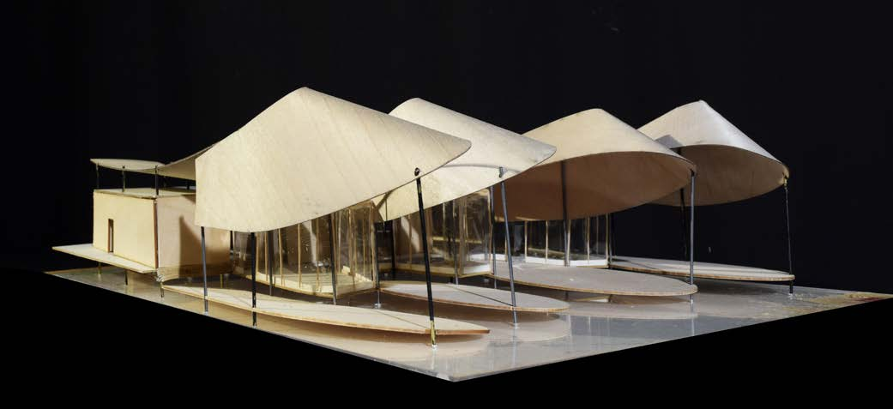
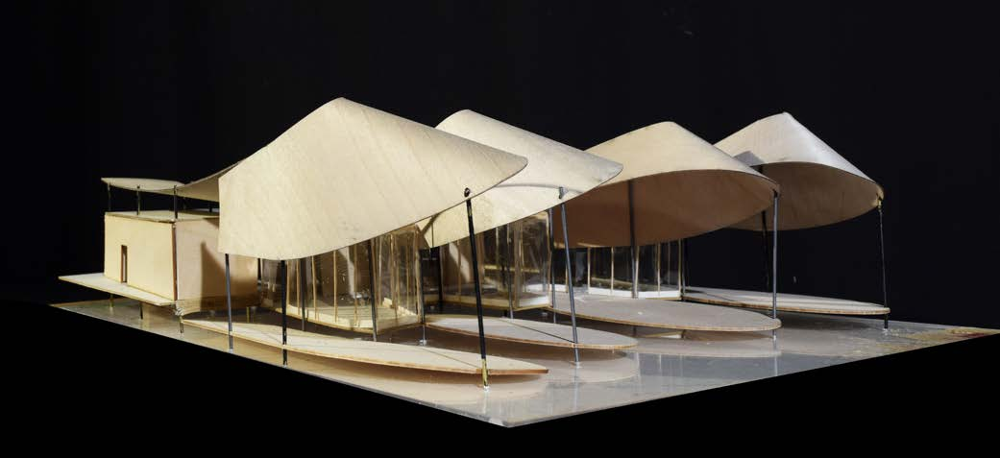

Location
3825 Lake Austin Blvd, Austin
Date
Category
Academic
Instructor
Micheal Bennedikt
This project reimagines the replacement of Abel’s on the Lake with a moderate restaurant that emphasizes a series of distinct dining rooms. The site has a special natural environment and surrounded by popular restaurants such as Hula Hut and Mozart’s Coffee Shop.
The "R" restaurant takes advantage of the site by extending the dining rooms 80 feet over the water where it is open to Austin’s temperate climate and diners could take advantage of the breathtaking view. The diners surpass two thresholds, one at the front main entrance and one at the stairs leading down to the dining rooms.
The boundary between indoor and outdoor is gently blurred through the use of translucent walls which provide a preview of what the outdoor experience is. Four outdoor dining areas contains different lighting effects throughout the day.
 
